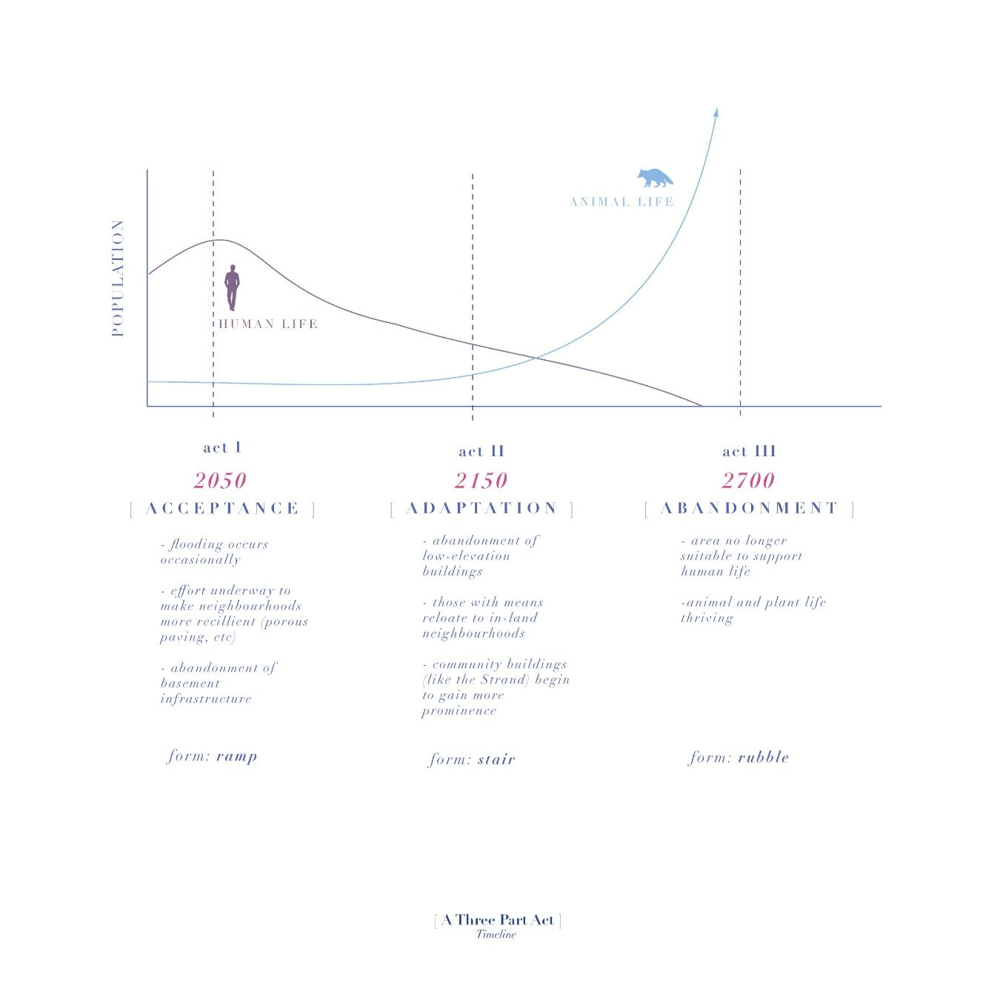
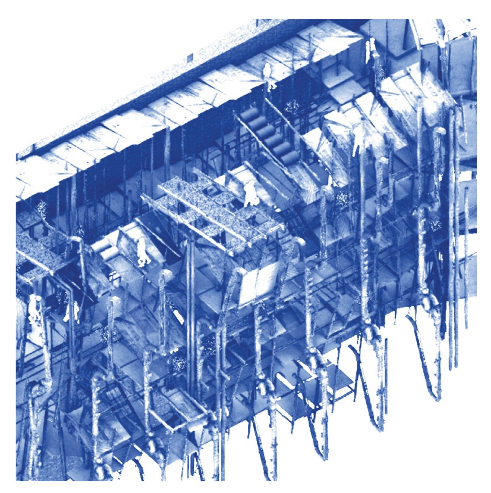
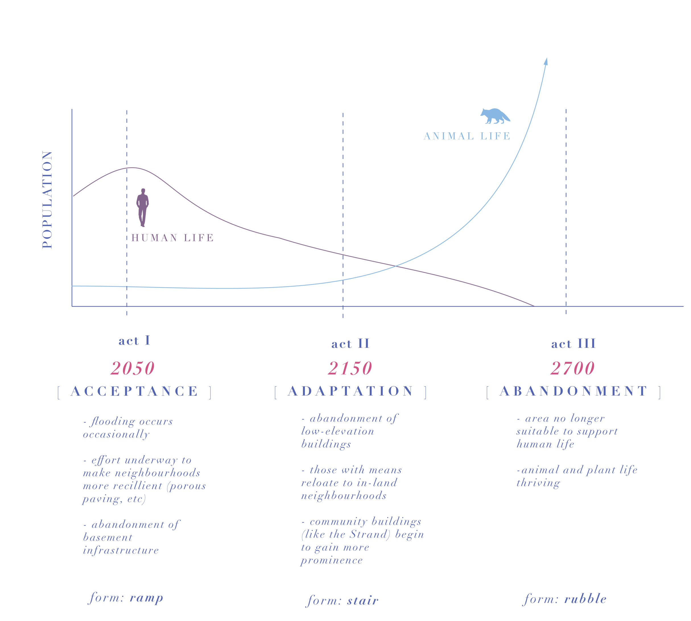
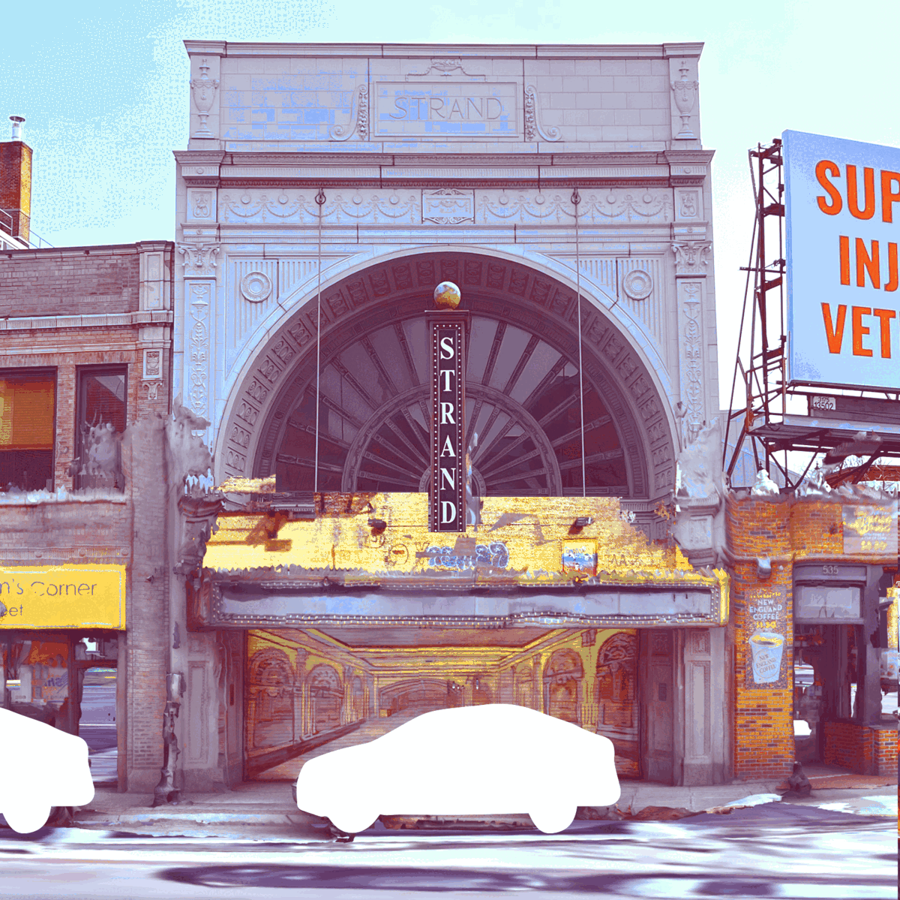
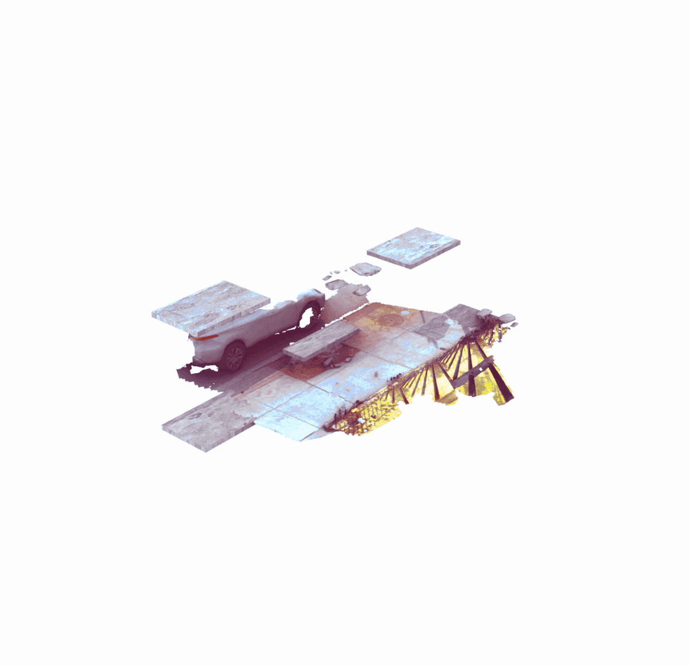
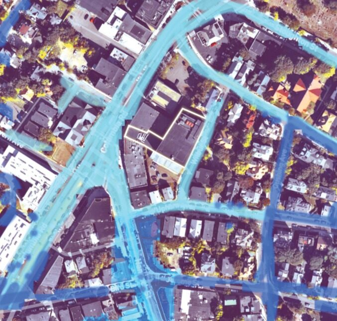
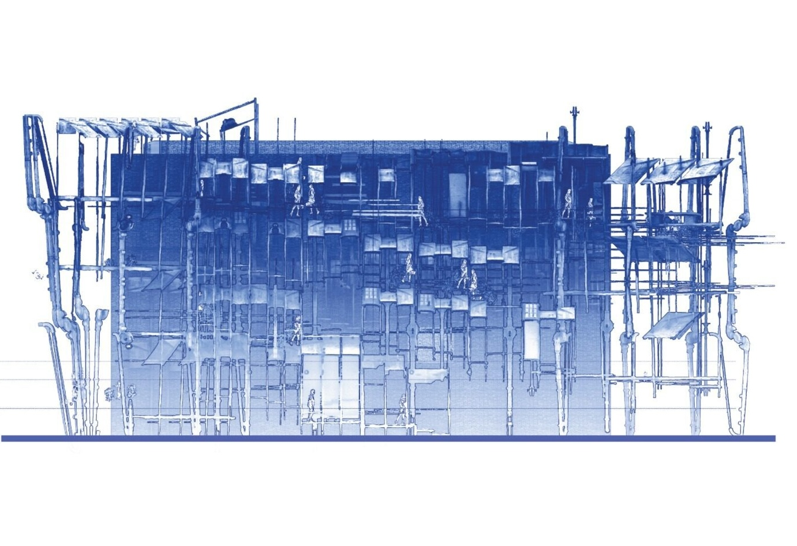
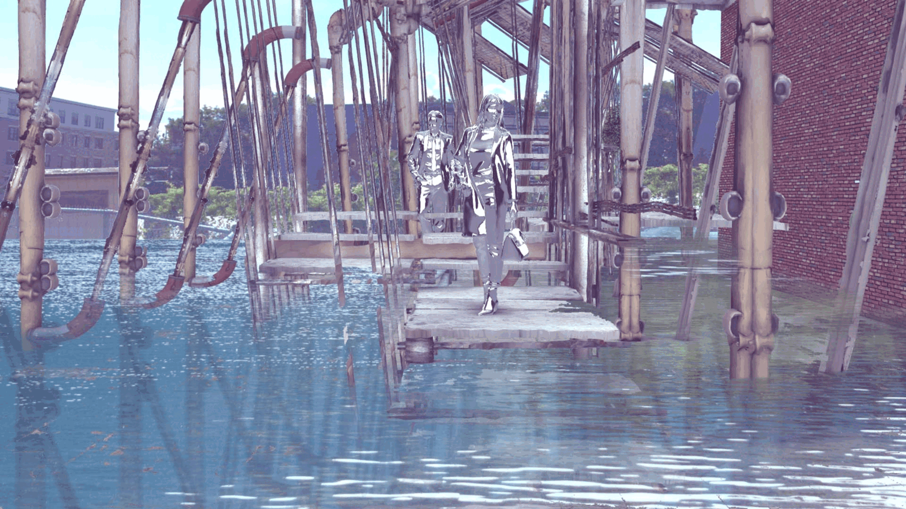

2022
A SUBSEQUENT MATTER OF SUBSTANCE
a speculative play about material choreography in deep time
The project examines circulation as a way to explore the future repercussions of architecture within the community of Boston’s Strand Theatre.
CONTEXT
Core II Studio, Massachusetts Institute of Technology
LOCATION
Strand Theatre, Boston
SOFTWARE + TOOLS
Rhinoceros 3D, Photoshop, Illustrator, LiDAR scanning
COLLABORATOR
L. Sloan Aulgur
SUPERVISORS
Silvia Illia-Sheldahl, Cristina Parreño


Built in 1918, the Strand Theatre has been part of Dorchester for more than a century. The project places equal importance on each phase of the building: past, present, future, and what follows.
The scene is set in 2050, when rising water and larger coastal storms have changed the role of Boston’s buildings. Because the Strand is one of the neighborhood’s largest buildings and occupies higher ground, it gradually shifts from a performing-arts venue into a broader community center.
Materials and services displaced from lower levels move upward and take on new roles. Pavement becomes stair treads; iron pipes become structure. Saved materials and programs hybridize into a new vertical lobby.
The proposal treats this as planned obsolescence: architectural space morphs as materials degrade. A paving tile may begin as part of a ramp, later become a stair or platform, and eventually return to rubble. Material life continues beyond any single use.
Material life cycle






.gif)